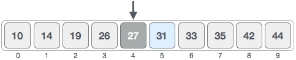
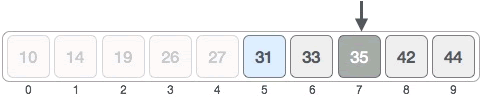
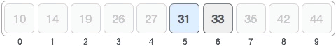

二分查找算法（折半查找算法）
二分查找又称折半查找、二分搜索、折半搜索等，是在分治算法基础上设计出来的查找算法，对应的时间复杂度为
二分查找算法仅适用于有序序列，它只能用在升序序列或者降序序列中查找目标元素。
以在升序序列中查找目标元素为例，二分查找算法的实现思路是：
举个简单的例子，在下图所示的升序序列中查找元素 31。

二分查找算法的具体实现过程为：
1) 初始状态下，搜索区域是整个序列。找到搜索区域内的中间元素。指定区域内中间元素的位置可以套用如下公式求出：
中间元素 27 < 31，可以断定 [0, 4] 区域内绝对没有 31，目标元素只可能位于 [5, 9] 区域内，如下图所示：

2) 在 [5, 9] 区域内，中间元素的位置为 ⌊ 5 + (9 - 5) / 2 ⌋ = 7，如下图所示：
中间元素 35 > 31，可以断定 [7, 9] 区域内绝对没有 31，目标元素只可能位于 [5,6] 中，如下图所示：
3) 在 [5, 6] 区域内，中间元素的位置为 ⌊ 5 + (6- 5) / 2 ⌋ = 5，中间元素就是 31，成功找到目标元素。
结合伪代码，如下是用二分查找算法在 {10, 14, 19, 26, 27, 31, 33, 35, 42, 44} 升序序列中查找元素 31 的 C 语言程序：
如下是用二分查找算法在 {10, 14, 19, 26, 27, 31, 33, 35, 42, 44} 升序序列中查找元素 31 的 Java 程序：
如下是用二分查找算法在 {10, 14, 19, 26, 27, 31, 33, 35, 42, 44} 升序序列中查找元素 31 的 Python 程序：
以上程序的输出结果均为：
O(logn)。二分查找算法仅适用于有序序列，它只能用在升序序列或者降序序列中查找目标元素。
二分查找算法的实现思路
在有序序列中，使用二分查找算法搜索目标元素的核心思想是：不断地缩小搜索区域，降低查找目标元素的难度。以在升序序列中查找目标元素为例，二分查找算法的实现思路是：
- 初始状态下，将整个序列作为搜索区域（假设为 [B, E]）；
- 找到搜索区域内的中间元素（假设所在位置为 M），和目标元素进行比对。如果相等，则搜索成功；如果中间元素大于目标元素，表明目标元素位于中间元素的左侧，将 [B, M-1] 作为新的搜素区域；反之，若中间元素小于目标元素，表明目标元素位于中间元素的右侧，将 [M+1, E] 作为新的搜素区域；
- 重复执行第二步，直至找到目标元素。如果搜索区域无法再缩小，且区域内不包含任何元素，表明整个序列中没有目标元素，查找失败。
举个简单的例子，在下图所示的升序序列中查找元素 31。
二分查找算法的具体实现过程为：
1) 初始状态下，搜索区域是整个序列。找到搜索区域内的中间元素。指定区域内中间元素的位置可以套用如下公式求出：
Mid = ⌊ Begin + (End - Begin) / 2 ⌋
图 1 中，所有元素的位置分别用 0~9 表示，中间元素的位置为 ⌊ 0 + (9 - 0) / 2 ⌋ = 4，如下图所示：End 表示搜索区域内最后一个元素所在位置，Begin 表示搜索区域内第一个元素所在的位置，Mid 表示中间元素所在的位置。

中间元素 27 < 31，可以断定 [0, 4] 区域内绝对没有 31，目标元素只可能位于 [5, 9] 区域内，如下图所示：
2) 在 [5, 9] 区域内，中间元素的位置为 ⌊ 5 + (9 - 5) / 2 ⌋ = 7，如下图所示：

中间元素 35 > 31，可以断定 [7, 9] 区域内绝对没有 31，目标元素只可能位于 [5,6] 中，如下图所示：

3) 在 [5, 6] 区域内，中间元素的位置为 ⌊ 5 + (6- 5) / 2 ⌋ = 5，中间元素就是 31，成功找到目标元素。
二分查找算法的具体实现
如下用伪代码给大家展示了二分查找算法的具体实现过程：
输入 arr[] // 输入有序序列
binary_search( arr , begin , end , ele): // [begin,end] 指定搜索区域，ele 为要搜索的目标元素
if begin > end: // [begin,end] 不存在时，返回一个错误值（比如 -1）
return -1
mid <- ⌊ begin+(end-begin)/2 ⌋ // 找到 [begin,end] 区域内中间元素所在位置的下标
if ele == arr[mid]: // 递归的出口，即 ele 和中间元素的值相等
return mid
if ele ＜ arr[mid]: // 比较 ele 和中间元素的值，进一步缩小搜索区域
return binary_search(arr , begin , mid-1 , ele)
else:
return binary_search(arr , mid+1 , end , ele)
结合伪代码，如下是用二分查找算法在 {10, 14, 19, 26, 27, 31, 33, 35, 42, 44} 升序序列中查找元素 31 的 C 语言程序：
#include <stdio.h>
//实现二分查找算法，ele 表示要查找的目标元素，[p,q] 指定查找区域
int binary_search(int *arr,int p,int q,int ele) {
int mid = 0;
//如果[p,q] 不存在，返回 -1
if (p > q) {
return -1;
}
// 找到中间元素所在的位置
mid = p + (q - p) / 2;
//递归的出口
if (ele == arr[mid]) {
return mid;
}
//比较 ele 和 arr[mid] 的值，缩小 ele 可能存在的区域
if (ele < arr[mid]) {
//新的搜索区域为 [p,mid-1]
return binary_search(arr, p, mid - 1, ele);
}
else {
//新的搜索区域为 [mid+1,q]
return binary_search(arr, mid + 1, q, ele);
}
}
int main()
{
int arr[10] = { 10,14,19,26,27,31,33,35,42,44 };
//输出二叉查找元素 31 所在位置的下标
printf("%d", binary_search(arr, 0, 9, 31));
return 0;
}
如下是用二分查找算法在 {10, 14, 19, 26, 27, 31, 33, 35, 42, 44} 升序序列中查找元素 31 的 Java 程序：
public class Demo {
// 实现二分查找算法，ele 表示要查找的目标元素，[p,q] 指定查找区域
public static int binary_search(int[] arr, int p, int q, int ele) {
// 如果[p,q] 不存在，返回 -1
if (p > q) {
return -1;
}
// 找到中间元素所在的位置
int mid = p + (q - p) / 2;
// 递归的出口
if (ele == arr[mid]) {
return mid;
}
// 比较 ele 和 arr[mid] 的值，缩小 ele 可能存在的区域
if (ele < arr[mid]) {
// 新的搜索区域为 [p,mid-1]
return binary_search(arr, p, mid - 1, ele);
} else {
// 新的搜索区域为 [mid+1,q]
return binary_search(arr, mid + 1, q, ele);
}
}
public static void main(String[] args) {
int[] arr = new int[] { 10, 14, 19, 26, 27, 31, 33, 35, 42, 44 };
// 输出二叉查找元素 31 所在位置的下标
int add = binary_search(arr, 0, 9, 31);
System.out.print(add);
}
}
如下是用二分查找算法在 {10, 14, 19, 26, 27, 31, 33, 35, 42, 44} 升序序列中查找元素 31 的 Python 程序：
#实现二分查找算法，ele 表示要查找的目标元素，[p,q] 指定查找区域
def binary_search(arr,p,q,ele):
#如果[p,q] 不存在，返回 -1
if p > q:
return -1
#找到中间元素所在的位置
mid = p + int( (q - p) / 2 )
#递归的出口
if ele == arr[mid]:
return mid
#比较 ele 和 arr[mid] 的值，缩小 ele 可能存在的区域
if ele < arr[mid]:
return binary_search(arr,p,mid-1,ele)
else:
return binary_search(arr,mid+1,q,ele)
arr = [10, 14, 19, 26, 27, 31, 33, 35, 42, 44]
#输出二叉查找元素 31 所在位置的下标
add = binary_search(arr, 0, 9, 31);
print(add)
以上程序的输出结果均为：
5
关注公众号「站长严长生」，在手机上阅读所有教程，随时随地都能学习。本公众号由C语言中文网站长亲自运营，长期更新，坚持原创。

微信扫码关注公众号